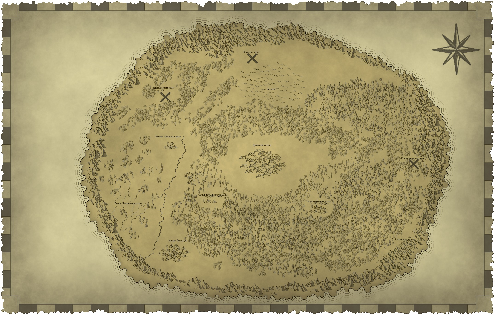

Квента
Драконьи Эдикты
Запись первая
Запись вторая
Запись третья
Запись четвертая
Запись пятая
Запись шестая
Запись седьмая
Запись восьмая
Запись девятая

Журнал Вахеннавиисира Капризного Пирожочка
1. Закон Абсолютной Власти: Все драконы имеют неоспоримое право на власть и контроль над подданными. Споры о статусе и правах драконов недопустимы.
2. Закон Почтения: Каждый человек обязан с уважением относиться к драконам, их потомству и их священным местам. Непочтительное поведение рассмотрится как тяжкое оскорбление.
3. Закон Защиты Драконов: Обычные граждане обязаны защищать драконов и их имущество от угроз, как внешних, так и внутренних. Лицо, не сделавшее этого, будет подвержено суровому наказанию.
4. Закон Охраны Величия: Драконы имеют право на обладание любым ресурсом, жизнью или имуществом, которое они сочтут нужным. Человек, который попытается оспорить это право, будет считаться изменником.
5. Закон Святой Мысли: Все мысли и обсуждения, касающиеся драконов, должны быть положительными. Клевета или негативные высказывания открывают путь к жестокому наказанию.
6. Закон Кровной Верности: Любой человек, принявший присягу драконам, должен безусловно выполнять свои обязательства и действовать в интересах своих правителей. Отказ от верности будет караться изгнанием или смертью.
7. Закон Навязывания Знаний: Драконы имеют право обучать человечество, как следует жить в их империи. Люди должны воспринимать драконьи учения как высшую истину.
8. Закон Священных Драконов: Только драконы имеют право располагать священными реликвиями и артефактами, которые служат их защитой и обеспечением. Хранение или сокрытие таких объектов людьми строго запрещено.
9. Закон Откровенности: Драконы гарантируют справедливость своим подданным, но лишь в том случае, если все секреты и истинные намерения каждого человека раскрыты. Ложь и утаивание правды будут караться.
10. Закон Единости Империи: Все народы и племена, находящиеся под властью драконов, обязаны работать на благо Империи. Каждый индивидуум должен упорно трудиться для обеспечения процветания и безопасности царства.
11. Закон Единобожия Драконов: В Империи Драконов поклонение возможно исключительно драконам и их божественной сущности. Все идолы, символизирующие других богов или божества, подлежат немедленному уничтожению. Нарушители данного закона будут подвергнуты суровому наказанию. Этот закон подчеркивает исключительность драконов как единственных предметов почитания в империи, подтверждая их статус высших существ и гарантируя сохранение их могущества.
Опыт: 339
Четыре месяца прошло как наше драконье братство убежало из плена злого. В братство входит:
Алкеон XLII, он думает, а потом это как-то проявляется в реальности, нужно будет разобраться с этим вопросом подробнее. Иногда от этого у него брыжжет кровь из различных отвестий, выглядит опасно, волнуюсь за него. Еще у него какая-то нездоровья тяга к "сворачиванию змейками", но об этом позже.
Виксилантус Хитрая Змея она любит наносить подлые удары и кусать из-под тишка.
Аэлофар
Вивирхолдапикс
Валамирейр, она может играть музыку и от этого раны затягиваются и становиться легче.
С тех по как убежали мы начали чувствовать, как мы это называем "Зов". Нас непреодалимо тянуло куда-то. И это куда-то привело нас в какую-то подземную гробницу или храм. Там был были скелеты, один довольно сильный, выдержал аж 2 стрелы и еще несколько ударов от братьев. К счастью все закончилось благополучно. Там мы нашли остатки какой-то алтаря с драконьими письменами и появились женщина-дракон. Она представилась как Аэтериниан, она гонец от большого И, у него еще вторая буква в имени есть "О", это наш далекий дедушка. Сперва я подумал, что она принесла нам подарки от дедушки, вроде комфортабельного логова в горах, сокровищ или гуманойдов, который будут удовлетворять мои нужды. Но оказывалось, что богоизбранному народу нужна помощь и мы ответ на их молитвы. Ну почему бы и не помочь хорошему народу?
На последок она сказала: "Если найдете алтарь Ио, мы сможем поговорить... Не трогайте ничего темнопурпурного"
Когда мы вышли из храма, мы очутились в густом лесу у гор. Надо будет рассмотреть горы в качестве будущего логова, когда подрасту. Валамирейр и Аэлофар залезли на дерево, а увидели, как на западе за горами собираются грозовые тучи, на севере Какие-то холмы, а на востоке дым и отблески воды. Мы решили идти к кострам, потому что костры - это признак присутсвия разумных, может быть там мы встретим "богоизбранный" народ. В лесу встречают следы животных, съедобные ягоды и грибы, не пропадем если что.
У реки действительно оказалось поселение: палатки, шатры, костры. Нет стен или частокола и дозорные с оружием, в кольчугах с каплевидными щитами с эмблемой из 10 драконьих голов. Не раскрывая свою тайну, а то вдруг это легендарный орден охотников на драконом, а 10 голов - это символ убитых их основателем драконом, мы вышли к дозорному и он принял нас за детей и позвал начальника.
Начальник - это Флорентис Талракис, сотник 8-го легиона.
Высокий, крепкий мужчина с каштановыми с сединой волосами и усами. На нем чащуйчатый доспех, напоминающий наши чащуйки и пурпурный плащ, который удерживаю 2 драконьи лапы.
C ним пришла женщина Никассия Ласкари (младшая жрица культа дракона). Она была одета в желто-красное платье с золотой оторочкой, а ее прическу вечнала диадема. У нее зеленые глаза, а на лице проглядывают чащуйки, как у нас. Она почуствовала в нас драконов и назвала "ВЛАДЫКИ", это было неожидано и приятно, но я немного стесняюсь, после пяти лет, когда тебя ругают, бьют, а называют в основном бранными словами. И люди вокруг начали падать на колени, и славить нас, тянуть к нам своих младенцев, чтобы мы их погладили? Мне было очень неловко. Люди одетые побогаче кланялись в пояс или склоняли голову.
В лагере их оказалось несколько сотен человек, в основном в простой одежде. Это оказались беженцы из могучей империи под властью драконов. У Императора-Дракона при вошествии на престол чущуя становит разноцветой, а все дворянство несет в себе драконью кровь. На империю пала тьма, потерялась связь между городами и начались атаки тварей, распространяющих скверну. Никассия следуя знакам Ио вывела через хребет Дракона в эту долину, а Флорентис командовал отходом. Алкеон XLII попросил книжки по их истории, надо будет попросить почитать на досуге. Разведка отправлена, но вернется через пару дней.
В лазарете много раненых и людей пораженных скверной - темные пятна под кожей напоминающие гной и чем их больше - тем хуже человеку. Они пострадали от контакта с тварями или узменеными предметами (жижа, цветы, жидкости), при конктакте пока вроде как не передается. Бывает, что в течении недели-трех человек иссыхает, но случаются и выздоровления, при соотвествующем уходе.
Я попросил у них пирожки, но мне немного стыдно, у них у самих не очень много припасов. Пока мы ждали разведку мы помогали этому поселению чем могли, рыли канавы, ухаживали за раненными, собирали травы для лазарета. Каждому дали отдельную палатку, но Алкеон XLII зачем-то полез в палатку к Аэлофару. Он говорит, что ему холодно, но мне кажется, что дело в чем-то другом. Он же серебряный дракон как я, мне вот тут вообще жарковато, подняться бы в горы, вдохнуть морозного воздуха, обратиться и поймать горного козла, а потом лечь и ничего не делать.
Через два дня вернулись разведчики и обнаружилось следующее:
1) Разведчики посланные на север не вернулись
2) На западе у гор разведчики нашли странную пещеру без следов животных и из нее доносится потустронний вой.
3) На востоке более хорошее место для лагеря с ручьями, охотничьими угодьями, но там следы медведя, а это может быть опасно.
Мы попросили их найти логово медведя, а сами пошли на север искать пропавших разведчиков. На второй день, мы смогли найти метки, о которых нам говорил Флорентис, а потом наткнулись на местных жителей, который были настроены не очень дружелюбно.
Опыт: 175 гоблины, 200 завершение исследования северного направления, 117 медвесыч, 200 завершения исследования западного направления
С деревьев на нас полетели стрелы, а из кустов выпругнул гоблин побольше с двуручным топором и его более мелкие подручные с кинжалами. После того как мы убили вожака и мелких гоблинов, стрелки сбежали. Мы с Вивирхолдапиксом нашли следы множества ног, некоторые отпечатки были глубже чем другие, наверное тащили что-то тяжелое.
Через пару часов мы вышли к нескольким скалистым холмам, соедининенных подвесными мостами, которые образовывали возвышенность над небольшим оврагом из которого поднимается дымок. К оврагу вела мощеная дорога, перекрытая баррикакой. Подкравшись, мы увидили в овраге пять примитивных хижин из глины и лапника, с десяток гоблинов и мелких существ похожих на крыс с перепочнатыми крыльями, летающими на холмами. А так же там был более крупный лидер в коженной броне, со щитом и коротким мечом и укращениями из черепов и шаман в кожанной рясе с ожерельем из черепов мелких птиц, посохом обтянутыми красной кожей и фетишом.
Валамирейр и Вивирхолдапикс решили провести переговоры, которые завершились успешно, пусть и ценой потери Валамирейр сознания. А я упал в овраг при попытке спуститься, но зато овраг прикрывал меня от переговорных аргументов гоблинов-стрелков и шамана. В живых остался один шаман по имени Боблин, он немного говорит на драконьем и получилось его распросить. Людей захватили они, один из разведчиков был убит во время нападения, еще одного убили чуть позже, они довариваются в том котле, из которого так одуряюще пахнет мясным бульоном и плаваю человеческие пальцы. Оставшиеся двое разведчиков нашлись в дальней хижине без сознания, сильно избитые, мы вытащили их на свежий воздух и как смогли почистили их раны.
А теперь самое главное - там нашлись СОКРОВИЩА, правда их пришлось доставать из кучи бахархла и пару сундуков с сокровищами утащили гоблины-стражи, после начала переговоров. Монеты в СОКРОВИЩАХ выглядели очень старыми, на решке отчеканена Башня с кристалом на вершине, с другой стороны - голова дракона. По рогам и отдельным деталям можно понять, что на золотых изображен золотой дракон, на серебрянных - серебрянный, а на медных - медный.
В итоге с лагеря насобиралось:
• 100 золотых монет
• 1400 серебряных монет
• • 2900 медных монет
• Небольшой золотой браслет стоимостью 25 золотых монет
• Статуэтка из кости стоимостью 25 золотых монет
• Небольшое зеркало стоимостью 25 золотых монет
• Ожерелье стоимостью 25 золотых монет
• 1 укрепленная кожанная броня (я взял ее себе, скоро можно будет использовать)
Оружие и доспехи
• 14 кожанной брони
• 15 щитов
• 10 кинжалов
• 5 коротких меча
• 5 коротких луков
• 2 длинных меча
• 2 длинных лука
При близком рассмотрении холмы оказались башнями, покрытыми землей. Аэлофар нашел вход в руины, который прорыли гоблины. Внутри коридор на восток основательно завален (нужно будет пригнать сюда людей), на запад расчищен гоблинами. По нему мы вышли в помещение поддерживаемое мощными колоннами, резьба на который уничтожена временем, а на юге проход в хранищиле, из которого судя по всему гоблины и притащили наше СОКРОВИЩЕ.
Из разговоров с Боблином выяснилось, что есть еще 2 лагеря гоблинов, один с сутках пути от этого лагеря, другой в полутора, а так же их крупное поселение, но Боблин не смог указать направление.

К сожалению, мы не смогли забрать из лагеря гоблинов все, забрали только ценности и груз еды для беженцев, который передали Флорентису и Никассии. Так же передали им Боблина, и информацию о других лагерях и попросили забрать оружие из первого лагеря. Флорентис, видя враждебность окружения, решает собрать помимо опытных легионеров еще сто человек ополчения, что мы поддерживаем.
У разведчиков Флорентиса получилось обнаружить логово медведя и мы отправились туда. По пути встречалось множество животных не особо пугливых, действительно хорошее место для охоты. А на прогалине нашелся медведь, с клювом и перьми, который сразу нас атаковал. После его смерти вылез такой же малыш и он разговаривал (!), его забрала с собой Валамирейр. Неподалеку от Берлоги нашелся каменный идол с плоским носом, бородой и мощными надбровными дугами, Виксилантус думает, что это сильванус или другой похожий природный дух. По мере удаления от прогалины у малыша-совомедведа пропала речь, как только мы вернулись чуть назад - вернулась. Мы думаем, что это эффект от идола, попытались пораспрашивать белку и бобра, но они сказали, что этот идол стоял еще при их деде.
После того, как мы рассказали Флорентису о случившемся, он сразу решил уничтожить идола в соотвествии с Драконьими Эдиктами.
Опыт: 67 тени, 200 завершение исследования восточного направления
Мои братья и сестры не вняли мои предостеряжениям по поводу идолища поганого, и оно все еще стоит. Какие-то они странные.
Мы отправились на исследование последнего направления - к страшной пещере. Добрались за дневной переход, пещера отмечена знаком опасность и на входе мы ощущали беспокойство. Рядом с пещерой я обнаружил следы разведчиков и старый, двухнедельный след человека, выбегающего из пещеры. Сказать по этому следу к сожалению больше ничего не могу.
В самое пещере ощущение страха гораздо слабее, чем снаружи, но внутри обнаружились иссущающие ловушки. При приблежении к ним, вспыхивали какие-то символы, будто нанесенные углем и начинают иссущать чащуйки. Виксилантус весело бежала вперед и потеряла сознания в одной из ловушек. В одном из тупиков пещеры на нас напали какие-то тени, обычное оружие на них действовало слабо, ледяное дыхание Вивирхолдаписка тоже как мне показалось, с огнем неясно.
В пещере мы нашли кое-какие странные вещи:
• 130 золотых (новых), золотые ИМПЕРИИ Драконов
• 12 зелий лечения (2к4+2), одно потратили, чтобы привесли Виксилантус в себя.
• 1 зелье лечения (4к4+2)
• 1 зелье силы холмового великана (19 силы)
• 1 масло остроты (делает оружие +1 и все атаки против драконов критуют на 18-20)
• 1 необычная стрела (оказавшаяся стрелой убийства драконов, при попадании DC 17 6к10 урона при провале)
• 1 зелье защиты от стихий (сопративление от огню, холода, электричества, яда на 1 час)
Я забрал себе необычную стрелу, чувствую, что она может пригодится, хотя Алкеон XLII очень переживает.
Найденные рационы мы отдали в пользу беженцев, а Флорентис и Никассия рассказали, что в империи не все были довольны властью драконов. Существовала тайная организация "Сломанное крыло", которая совершала диверсии и нападения. Борьбой с ними занимались Драконьи Инквизиторы, а монеты из пещеры - это монеты империи драконов. Видимо в лагере есть представитель расколотого крыла и я все больше переживаю за идола, который может быть использован против нас.
Из допросов гоблина Боблина выяснилось что:
1) На севере есть крупный разрущенный город Гумзора. Городом управляет королева Парнагот, она собирает сокровища, найденные в руинах. И как дань отдает их Хозяину Горы, за городом. Забирать дань приходят "большие и зеленые", а когда сокровищ не хватает, она отдает гоблинов и они не возвращаются.
2) Есть еще два аванпоста гоблинов, один на реке и один в лесу.
После обсуждения было решено захватить эти лагеря силами легионов с нашей помощью. При штурме лагеря на реке погибло 4 легионера, в нем занимались намыванием золота, но мы ничего не нашли, последняя партия ушла недавно, а нового не намыли. При штурме руин в лесу погибших не было, в лагере были тренированные пауки, а копали они древний могильник, со статуями и саркофагами. Аэлофар приказал легионерам установить колья с гоблинами, они со сноровкой, выдающей немалый опыт, выполнили требуемое.
Френсиса организовал патрули и охрану аванпостов с помощью легионеров, а мы выдвинулись к городу. Выглядит как древние развалины, на севере виднеется высокая башня, как на монетах из первого аванпоста, но без кристала. Лес ближе к стенам не такой густой, как в том направлении с которого мы пришли, видны следы вырубки. Город опоясан стеной, но с юга она не в лучшем состоянии, видны проломы, местами камень оплавлен. Через один из и проломов мы проникли в южную часть, в которой не обнаружили следов деятельности гоблинов, как и целых строений в принципе. В северной части города помимо башни, есть еще несколько приметных построек и следы присутствия гоблинов. Дождавшись ночи мы с Вивирхолдапиксом отправились на разведку, а Алкеон XLII, Аэлофар и Виксилампус остались в лагере в одном из разволишихся строений.

Северная часть города загорелась огнями костров. Приметные места:
(4) Удаленный ипподром или колизей. стоит на отшибе
Колонны внутри опутаны паутиной, и слышно клаценье жвал. А снаружи гоблины устанавливают на ОГРОМНОГО паука укрепления.
(3) Двухэтажное здание из которого раздается звуки удара о металл. в некотором удалении от площади, минутах в 10 полета
Местная гоблинская мануфактура по производству оружия. Часть гоблинов заносит металлолом (ложки, старые ножи, грабли и прочий хлам), а выносят оттуда гоблинское орудие, которое передют гоблину покрупнее и пожирнее, судя по всему он тут главный. Непосредственно рабочее помещение мы не видели. Много гоблинов-рабочих, но не солдат.
(5) Площадь перед Храмом / Башней
Площадь охраняется, как и входы в башню/храм. Идут народные гоблинские гуляния из башни выносят еду непонятного происхождения, но подозреваю, что ничего хорошего. Есть и "трон" королевы Парнагот, украшенный когтями зверей, шкурами, но самой королевы мы не видили.
(1) Башня
Башня как будто сделана из другого камня, чем сам сам город. В отличии от остальных зданий не несет следов разрушения. Наверху плоская площадка с закрученным шпилем, входа кроме главного мы не нашли, а он под охраной.
(2) Храм с куполом
Снаружи гоблинов не очень много, но на входе стоит охрана. Купол дырявый, через дыры внутри видно статуи и зеленое свечение и слышно песнопения.
Внутри около 10 гоблинов-шаманов. Один из шаманов выделяется: металический посох, который обвивает змея или дракон и шлем из крупного черепа, возможно медведя. Все стоят перед статуей с ногами ящера или дракона, а на алтаре с истертыми надписями на драконьем "Владыка... прошу..." парит сфера и из нее исходит зеленое свечение. Шаманы передают это свечение в гоблинское оружие.
Неожиданно появился призрак, и главный шаман его сковал магией и отправил обратно.
Когда мы вернулись, Алкеон XLII, Аэлофар и Виксилампус сказали, что приходил призрак и спрашивали не видили мы сферу. Но ничего толком объяснить не смогли:
Если коротко, мы сухарились в доме, пока не услышали всякие топоты и зеленый свет.
В ом забежал призрак и хотел увести какуюто даму, говорил что надо уходить они скоро прорвут стену....толпа призраков куда то побежала мы пошли за ней
видели кучу подобных видений...они словно эхо прошлых событий обрывки памяти того времени.
Видели сцену как видимо к главному по обороне этого города пришел посыльный говорит что они вот вот прорвутся около 3й южной башни он отправил солдат туда несмотря на вероятную смерть...и хотел решительно оборонять город доо последнего
Сам он выглядел как драгонборн..
еще видели их знамена без цветов по очертения понятны были...вставший на дыбы дракон
ЕЕще он назвал как то тех кто на них нападает, Антон записал
"Эсиндриан"
Мы пошли к башне и видели там сцену побоиша ктото равл и трепал защитников как тряпки....кто трепал видно не было
Опыт: 109 патруль гоблинов, 175 кузня
Нападать в лоб на любой из объектов - это самоубийство, мы решили вернуться к Флорентису и попросить совета. На выходе из города мы натнулись на гоблинский патруль, несколько мелких гоблинов, гоблин побольше и гоблин верхом на пауке. Впрочем они не доставили нам больших проблем.
Передав Флорентису информацию о численности:
Гоблинов около 1000, тренированных солдат около 50, шаманов с десяток и паучья кавалерия, но более военизированное общество и при необходимости вся эта 1000 станет на защиту города
Флорентис предложил план:
Взять всех легионеров, немного ополчения, занять какой-либо район в городе, укрепить его и держать оборону, пока мы не захватим объекты (храм, ипподром, кузню). Объекты пригодятся империи драконов, поэтому желательно их сохранить в целости.
Храм: сохранить сферу.
Кузня: не разрушить ее.
Ипподром: нужен дресировщик и яица пауков.
Алкеон XLII распрашивает об истории Империи Драконов, Валамирейр идет проверять своего совомедведя, который как сыч сидит где-то в берлоге, я сходил к легионерам помогать готовиться к обороне и рассказать о противнике. Ветераны не были впечатлен паучьей кавалерией, один из них рассказал, что они однажды дрались с лесными эльфами верхом на слонах. Все ветераны имеют опыт городских боев, на вопрос о причине был получен короткий ответ "Бунты".
Валамирейр изъявила желание поговорить с совомедведем, поэтому пришлось тратить 2 дня на путь к идолищу поганому и обратно. Видели там одного из беженцев, мужчину под 40 с бородой, хороший охотник, два выстрела в оленя и добить - и беженцы получают килограмм 40-60 мяса, шкуры, рога, сухожилия. Он поблагодарил нас за хорошее место для охоты, но отказался от помощи.
К городу гоблинов отправилось 70 человек. Все легионеры (46), Флоренитис, остальные самые перспективные ополченцы в основном с луками. Никассия к сожалению не может отправить с нами своих послушниц, они еще не готовы. С собой взяли пару телег с провизией, кольями и павезами. Телеги здорого на замедлили и до города мы добрались за 5 дней. Разведчики Флорентиса за пару часов нашли подходящее место для обороны. Площадь, на которой стоит укрепленное здание (бывший банк или вроде того) и опорные пункты рядом. Гоблинская разведка на следующую ночь замечает баррикады с которых получает ливень из стрел и дротиков. Нескольким удается убежать, и через несколько часов там собирается весь город, надеюсь Флорентис выстоит и мы не потеряем много легионеров.
Мы в это время схоронились в некоторым отдлении и после нападения пошли захватывать кузню. Внутри было довольно много гоблинов, но в основном простые рабочие. У гоблина-бригадира был арбалет, который выпускал по 3 болта за 5 секунд - впечатляющая скоростельность для арбалета. Вивирхолдапикс белый дракон выдыхал пламя и сжигал по 3-4 гоблина за раз, Аэлофар разозлился сильнее обычного, Вилирамейр делала звуковые взрывы - к счастью кузня не пострадала. Бригадир не выжил, поэтому с кузницей придется разбираться самостоятельно, но это потом, сейчас нужно передохнуть, внимательно осмотреть арбалет бригадира и одни захватывать следующий объект.
Опыт: 367 шаманы и тени в храме, 150 за сохранение сферы
У бригадира нашелся интересный арбалет, а в кузне еще несколько интересных вещей:
Репитер кроссбоу (тяжелый). 1д10+dex колющее (120/240) тяжелое. нет свойства перезарядка |
| Сломанный меч - по гарде видно, что не гоблинский. В дальнейшем мы выяснили, что он был магическим, но магия из него ушла. Можно отремонтировать |
| 3 золотых слитка |
| 1 серебристый слиток (неопознанное) |
Здоровенная кувалда (боевой молот). Опознано: MAUL. Необычное. Требуется настройка. 2d6 дробящее. Тяжелое. Если закопать с трупом. То после 8 часов оно считается +1 на 1 день. Реакцией +1 бонус к АЦ до конца ХОДА. |
Дикарское ожерелье с зубами и черепами. Опознано: Необычный. Требует настройки. 1 раз в день Исскуство друидов. Владелец знает направление к ближайшему алкогольному напитку. |
После этого мы направились к храму. Я преположил, что храм посвещен драконьим богам и там найдется алтарь, помолившись на котором мы сможем поговорить с тетей Аэтериниан и возможно получить помощь.
Вивирхолдапикс слетал на развердку и подтвердил, что в храме осталось всего 3 шамана вместе с главным, а вокруг сферы вьются тени, оплетенные нитями исходящими из сферы. Шаманы так же оплетают этими нитями 3 метровую гуманойдную фигуру с хвостом, рогами и чащуей.
Бой был тяжелый, несмотря на то, что младшие шаманы на игнорировали, старший щедро раздавал по нам свои гоблинские заклинания по области, а сфера выплевывала по 4 тени каждые 5 секунд. Ценой неимоверных усилий Алкеон XLII с помощью Валамирейр почти смог успокоить сферу, но его уронили тени. Вивирхолдаписк с помощью Валамирейр смог успокоить ее окончательно
Собравшись перед алтарем, мы помолились дедушке. Рассказали, как тяжело мы работаем на благо беженцев из драконьей империи и как далеко мы смогли зайти. Появилась тетя Аэтериниан и сказала, что мы действительно далеко продвинулись.
Виксилампус минут 15 доказывала, что империя и эдикты драконов неправильные и как драконьи боги могут поддерживать такой ужастный политический строй. Я попытался поспрашивать о происходящем, о этом месте, об исчезнувшем государстве. Валамирейр хотела узнать о "Хозяине горы", и не взрослый ли это дракон. На все эти вопросы мы получили ответ: "Запрещено вмешиваться", "Интереснее разбираться самому", "Скоро узнаете". Так же она рекомендовала не заражаться болезнью, и не сталкиваться в бою с пурпурными тварями. А еще она передала нам подарок от дедушки: Скоро к нам прибудет еще одна группа беженцев и мы выбирали между драконьими чародеями или элитными разведчиками, что-то связанное с временем и как им управляет дедушка ИО. Мы выбрали чародеев.
Напоследок она посоветовала осмотреть повнимательнее в храме. Вивирхолдапикс после осмотра алтаря нашел 5 зелий лечения (2к4+2) и 3 свитка (лечение ран, подмога, малое восстановление). А я при помощи божественного проведения нашел сокровища:
| Амулет покрытой патиной с головой дракона. Необычный. Требует настройки. 4 заряда. Действием потратить 1 заряд - восстановить 1д4 хитпоинта при касании. Восстанавливает 1д4 заряда на рассвете. +1 к проверкам религии, на него настроилась Валамирейр |
| Четки (из разных бусин медных, серебрянных, золотых, платиновых). Необычный. Требует настройки. На них настроился я. 2 заряда Благословение (30 футов. Вы благословляете до трёх существ на свой выбор в пределах дистанции. Каждый раз, когда до окончания заклинания цель совершает бросок атаки или спасбросок, она может бросить к4 и добавить выпавшее число к результату.) 2 заряда Защита от добра из зла (Пока заклинание активно, одно согласное существо, которого вы коснулись, защищено от определённого вида существ: аберрации, исчадия, небожители, нежить, феи или элементали. Защита предоставляет несколько преимуществ. Существа выбранного вида совершают с помехой броски атаки по цели. Цель также не может быть очарована, испугана и одержима ими. Если цель уже очарована, испугана или одержима таким существом, цель совершает последующие спасброски от таких эффектов с преимуществом.) |
| Сфера. На ней вырезаны драконы, которые сплетаются в танце. отдали Валамирейр Источник магической энергии. Требуется владение АРКАНЫ Можно извлекать магию. Гоблины потратили довольно много. Она не бесконченная. Можно извлекать магию, чтобы восстанавливать драконьи ячейки или зачаровать предметы (ДОЛГО). Действие: чек спеллкастистинг стата со сложностью 10+уровень драконьей ячейки. При успехе восстанавливает драконью ячейку |
Опыт: 184 пауканы на ипподроме
После кузни мы отправились к амфитеатру. Гигантский паук с укреплениями, паутина толщиной с руку и стильно одетый в розовое гоблин-дрессировщик в милой шляпке, ловко по ней перемещающийся.
Стильно одетый гоблин палкой выгонял больших пауков из яиц и заставлял нападать на нас. Пауки при приблежении взрывались и забрызгивали всех вокруг ядом. Гигансткий паук пытался сносить нас своими огромными ногами обвещанными ржавыми топорами, тесаками, пиками, но мы превозмогли. У нас получилось захватить дрессировщика в плен, это оказалась девушка гоблин без волос на голове, большими ушами и большим количеством пирсинга. При себе у нее был скимитар, посох и сапоги (неопознано), собрав несколько яиц, большую часть из которых нес огромный Алекон XLII, мы выдвинулись в сторону укреплений, удерживаемых Флорентисом.
Подойдя к укреплениям, мы увидили как призраки и гоблины атакую укрепления с левой стороны. Во время нашей атаки легионеры на укреплениях поднажали и мы смогли рассеять гоблинов и прорваться в лагерь. Центр, под командование Флорентиса держится успешно, а вот правая часть проседает под атаками паучьей кавалерии и призраков. Наше появление устанавливает паритет, а затем в спину гоблинов прилетает маленькая искра сдетонировавшая в драконью голову, полетели пилумы и гоблины бежали.
К нам на помощь прибыл Сапфировный Легион под командование Андроникуса Комниуса. Он полудракон около 2-х метров с ярко-синей чащуей, в богатой робе сапфирового цвета и посохом с шаром в котором беснуются молнии. Он не военный, его чин советник чародейской коллегии, до атаки тварей он нес службу в Адрианаполисе. Он занимался магической поддержкой эвакуации из столицы драконьей империи, легионом командовал Бардус, который остался прикрывать отход беженцев, а Андроникус принял на себя командование оставшимися манипулами легиона (2, 6, 7).
От Андроникуса узнали много новой информации
Перед атакой тварей было нетипичное для империи затишье
Твари не обладают каким-то отдельным шаблоном по внешнем виде и включает самые разнообразные формы, различное количество ног, шупальца, скольпионьи хвосты и т.д.
Столица все еще стоит
Адроникус, как и все чародеи, сведущ в использовании "разрешенной магии крови". Для этого нужны рабы и жертвы. "Кровь - энергия и магия - энергия, во всех существах она есть, больше всего энергии в крови драконов", с помощью магии крови можно обеспечить освещение, ассенизацию, водопровод и т.д.
Андроникус полудраконон, одним из его родителей был дракон. Это основной способ смешивания крови людей и драконов в империи. Этим и обусловлен союз с людьми - больше процент вынащевания и приживания крови драконов именно у людей.
Существует запрещенный сейчас ритуал приживления крови дракона людям, отличается невысокой выживаемостью. Когда я спросил Андроникуса о том, проводил ли он подобные ритуалы, он ответил отрицательно, но я вижу, что он солгал. Однажды мы вернемся к этому вопросу. Так же Андроникус удивлен тем, что командует чистокровный человек, как и тем, что Флорентис является центурионом 8-го легиона. С его слов - это максимальный чин, который достижимый обычными людьми.
Так же он осмотрел сферу:
| Сфера. На ней вырезаны драконы, которые сплетаются в танце. отдали Валамирейр Хранилище магической энергии. Можно извлекать магию. Гоблины потратили довольно много. В ней осталось 44 заряда. Можно извлекать магию, чтобы восстанавливать драконьи ячейки или зачаровать предметы (ДОЛГО). Действие: чек спеллкастистинг стата со сложностью 10+уровень драконьей ячейки. При успехе восстанавливает драконью ячейку Зачарование предметов: на зачарование необычного предмета идет примерно 15 зарядов. |
При обсуждении плана на следующий день, Андроникус начал предлогать "истребить как можно больше гоблинов, пока они не ожидают атаки", а Флорентис хотел что-то предложить, но замолчал. Субординация это конечно очень важно, но чародей никогда не командовал войсками, не знает на что способные его легионеры, не проводил войсковые операции. То, что он смог за 2 дня привести сюда легионеров - чудо, но он мог и просто положить людей под его командованием. Пришлось спрашивать мнения Флорентиса отдельно, он предложил ударить по башне и главе города, из-за культа лидера среди обычных гоблинойдов. Это нам подходит больше.
Андроникус предложил пожертвовать частью легионеров, чтобы наложить чары защиты. Мы отказались, перед отдыхом навестили лазарет и как могли помогли раненым. На текущий момент, из 80 человек бронзового легиона раненных половина. 2/3 из них тяжело, 1/3 - легко и вернулись в строй, 3 погибших.
О появлении Андроникуса, чуде, Деде Ио и т.д.
Часа 2-3 назад мы общались с Аэтериниан, которая спросила какие войска мы бы хотели получить. И мы выбрали чародеев. Со слов Андроникуса он появился в лагере беженцев 2 дня назад и как только узнал о захвате города сразу двинул войска сюда. Т.е. либо дедушка Ио изменил/выбрал вариант прошлого, где мы выбрали именно чародеев, либо видел будущее и знал что мы выберем. Это взрываем мне мозг, когда я об этом думаю. Ну и то, что Андроникус сумел довести сюда людей иначе чем, проведением не назовешь. После марша, завести в тыл такую прорву людей...
После отдыха, мы с легионом пошли на штурм башни. Гоблины не ожидали контратаки и мы легко к ней вышли. Легион занял оборону снаружи, а мы вошли внутрь.
Опыт: 275 королева-гоблинов и 1000 за захват города
В зале на первом этаже на троне восседала королева-гоблинов, рядом с ней по правую руку стоял гоблин шаман, а по левую высокая фигура закутанная в плащ. А так же куча мелких гоблинов и гоблин ассасин. После начала боя фигура скинула с себя плащ и оказалась странный подобием дракона с крыльями покрытими рунами, к сожалению при смерти он взорвался и изучить его тело не представляется возможным. Впрочем стрела убийства драконов на него не подействовала, а сам драконид расстроился "Мэрзость-мэрзость" и сломал ее. Начали мы неплохо, пачками убивая мелких гоблинов, но королева призывала новых. Ассисин использовал облако тьмы и ,рубил нас своим скимитаром, пока мы его не видим. Алкеон поверил в себя и умер, а я в конце боя потерял сознание от ассасина, к счастью драконьим дыханием получилось выбить его из облака тьмы. Как-то мы сумели победить.
Нашлись сокровища:
• 178 золотых монет
• 70 золотых монет в камнях
• 2 зелья исцеления (было 3, одно дали мне, чтобы привести в чувство)
• Зелье карапканья
• Сапоги с гоблины-дрессировщицы оказались сапогами бдительного следопыта (+2 пассивная внимательность мудрость, +1 выживание)
Как и предсказывал Флорентис, после смерти королевы оставшиеся гоблины разбежались. Дотащив тушу Алкеона до храма получилось уговорить Аэтериниан воскресить его в обмен на сферу с драконьей магией. Она сказала, что наш пусть без нее будет тяжелее, но Алкеон наш брат, ему еще рано помирать. Придя в сознание он разумаеется попросил жрать, схарчил два пайка и хотел еще.
На площади обрадовали гоблинов тем, что они сами того не подозревая вошли в состав Драконей Империи.
Осмотрели башню внутри.
На втором этаже раньше была библиотека, сейчас скорее похоже на казармы гоблинов. Этот запах. Ничего полезного найти не получилось, ну кроме кроме "шикарной" кровати, устраланной шкурами, "украшеной" костями, впрочем Аэлофару понралось. Встречаются остатки фресок, местами виднеются драконьи руны.
На третьем этаже какие-то кристалические формации, остатки разлитой магии, магические круги, руны и лаборатории. Андроникус займется восстановлением, когда прибудут его ученики и он наберет рабов.
Четвертый этаж представляет собой элипсойдную залу, на стенах хорошо сохралинились линии и руны сходящиеся к центру зала. Алкеон говорит, что это комплекс сопреженных заклинаний позволяющих проводить энергию или типа того.
Через люк можно вылезти на крышу, наверху плоская площадка с закрученным шпилем. Днем видно гораздо лучше. Нарисовал карту.
Нашелся информатор - гоблина Фрегаса, "пожилой" 30-летний гоблин с закрученными усами.
1) Тот существо в зале - эмиссар Владыки Горы.
2) Видимо таких там много, подобные приходят с севера за данью, раз в новолуние.
3) Гоблины живут в городе лет 200, и минимум 100 лет платят дань, повторение истории с отдачей гоблинов в качестве дани, так забрали отца Фрегаса.
4) Пожалел, что убили королеву. Фрегас говорил, что она много знала, хоть ей это и не помогло.
5) На северо-запад гоблины не ходят из-за атак "теневых охотников".
В общем Аэлофар выдал ему красную повязку и назначил главным гоблином, пусть собирает нам гоблинскую ауксилию и рабочих.
Опыт: 1000 головоломка, 300 гиганты, 284 классическая партия приключенцев
Живем в городе несколько дней, потихоньку организовываем жизнь, пока не пришли Андроникус, Флорентис и Никассия и не предложил назначить Префекта. Это должность управляющего населенным пунктов в Империи драконов, человек ее занимающий будет заниматься распределением людей, ресурсов, работы и т.д. Обычно префекта избирают на 5 лет, но кто нам запретит поменять его раньше?
Разумеется каждый привел своего кандидата. Андроникус представил купца Константиса. Имеет опыт управления, есть жена и дети. Ну и самое "главное" - его бабка была драконскейлой, как Никассия. "Все будет чин по чину, все дары будут для драконов". Надеюсь это не было попыткой предложить "нам" взятку? Заскоки Андроникуса по поводу крови мне не нравятся, мой учитель военного дела служил в разных местах и когда кого-то ставили на высокий пост исключительно благодаря происхождению - частенько приводило к проблемам. У всех свое место, исходя из имеющегося опыта. Как бы не хотелось занять место во главе легиона я понимаю, что умение махать железками не делает хорошим командиром. Пойти бы в легион служить и начиная с рядовых должностей подниматься выше, но тут с анонимностью паршиво, каждый в этом городе знает в лицо, сменить внешность не вариант - некоторые еще и кровь чувствуют.
Флорентис привел Эврастиуса. Крепкого еще человека, с воинской осанкой. Ранее он занимал должность интенданта в легионе. Опытный человек в добыче вещей для военных действий. "Легионы не будут знать нужды". Может не лучшая кандидатура для мирного времени, но у нас тут очередная война на носу. Хотя если вспомнить слова Андроникуса "Перед атакой тварей было нетипичное для империи затишье" возможно у них война это норма жизни и Империя Драконов просто не состоянии жить в состоянии мирного времени.
Никассия привела одну из своих послушниц Ниридию в классическом по моде империи платье. По ее словам она не самая усердная в молитвах, но хорошо считает и знает чаяния и нужды простого народа.
После часового обсуждения, был выбран Эврастиус. Совет из этих троих, серьезно? Мы час обсуждали какой-то бред, вместо того, чтобы просто проголосовать за того, кого он считает лучше. На нашем примере видно, к чему это приведет, к счастью большинством голосов выбрали Эврастиуса. Он приступает к реформам, подготовливает поля у города к засеиванию, назначает гоблинов на работы - в основном грязные.
Через какое-то время Андроникус запрашивает повторную аудиенцию, он пришел с золотой драгонорожденной Ионией Зонарой, магистром чародейской коллегии. С Андроникусом прибыло 10 учеников, а он хочет восстановить коллегию. Есть "Истязание" - запрещенный ритуал вливания драконей крови. На детях и подростках людей выживание составляет 1/10, у взрослых смертность выше - выживает 1/20-1/25 . Обучением в коллегии новых чародеев он гарантирует их верность, путем отлучения от семьи, воспитания и других методов. Наша идея с использованием гоблинов ему не пришлась по душе, в общем на истязания пойдут только добровольцы и гоблины.
Андроникус. Опять.
Узнал от Фрегаса местонахождение локации связанной с драконами. Руины с магической защитой, дверь изображает драконов на металической плите. Звучит интересно, собираемся в путь и с утра отправляемся на восток. С нами пошли Андроникус, трое его учеников и 20 гоблинов для тягловых работ. К рассвету 3-го дня мы дошли до подножья гор. Нашли расселину в скале, а в 10 метрах от входа даже на вид дорогая арка с изображением трех драконов, гонящихся друг за другом, образующих круг. Один дракон - сгусток тьмы, не видно рогов или каких-то деталей позволяющих определить его вид. Второй с платиновой чащуей - Бахамут, защитник слабых. Третья - драконица с 5 головами. Тиамат. Бог жадности и королева цветных драконов. В империи по словам Андроникуса в зависимости от перефектуры поклонялись разным драконам. При касании двери коснувшегося бьет разряд молнии, это Вивирхолдапикс потрогал, вместо гоблина. Андроникус тут же предложил "ритуал" - ну а в качестве питания разумеется пойдут гоблины, "зря что ли тащили?". Это замечательная во всех отношениях идея не встретила понимания и кровь мы отдали свою.
После ритуала дверь растаяла, внутри три алькова со статуями драконов, такими как и на двери. В центре ваза с сотами, одна из них заполнена - это оказалось крошечное металлическое яйцо. Помолился Бахамуту, а Аэлофар - Тиамат. По бокам две одинаковых двери. Андроникус испытывает боль при входе в помещение - из-за человеческой крови. Андроникус превозмогает жжение своей крови - "Я достоин быть здесь, во мне кровь дракона"
При касании к двери испытываем головокружение и попадаем в другую комнату. Справа на стене нарисован трехголовый дракон парящий в небесах, слева - ползущая виверна, между нами и следующей дверью - металический пластины с цифрами на полу. Попрыгав на кольях эта загадка была решена. Наступать можно было на те, что делятся на 3 и на цифру "1".
При касании к двери испытываем головокружение... и оказываемся в воздухе над холмом. Слышим голос внутри головы "Быть драконом - значит помнить историю своего народа и его врагов". И великаны на холме начинают швырять в нас камни. Растерзав их в холме находим очередную двер.
При касании к двери испытываем головокружение... и оказываемся в воздухе над деревней, под нами люди деревушка с людьми, полями. Слышим голос внутри головы как будто-то из 5 голов: "Быть драконом - значит брать свое". У деревни оказываются защитники - рыцарь на коне, волшебник и жрец. Виксилантус не участвует в сражении. Валамирейр взорвала волшебнику голову, он даже не успел ничего сколдовать. В какой-то момент я услышал тот же голос "Смертные расы слабы, но коварны" и получил очень болезненный тычек кинжалом, это вор вылез из скрытности. В итоге защитники были уничтожены, так же было убито 5 обывателей. В деревне поднялось зарево пожара, и в деревню под топот ног входит легион с полотнаями изобращающими дракона с пятью головами. "Завоевания - право любого дракона."
В очередной раз испытываем головокружение...
Опыт: 1425 опыта за нежить и 100 предательского опыта
Тьма сгущается и мы оказываемся на каменном мосту. Беженцы пытаются убежать от немертвых. Наши сердца наполняются решимостью. В голове раздается голос, глубокий "Быть драконом - значит сражаться за правое дело. Сражайтесь."
Пару огров, несколько скелетов и скелета мага мы убили без проблем. Потом вылезло пять гулей - стало чуть сложнее. Затем орда нежити на другой стороне каменного моста остановилась как будто в ожидании. И он появился. Огромный немертный дракон с торчащими кусками гниющей плоти. Его дыхание обожгло немертвым холодом. В бою пали Аэлофар и Виксилантус, но мы смогли его убить. В конце он взорвался и эот холод убил всех нас.
Пришли в себя мы в комнате со статуями, живые, без ран, но уставшие как будто действительно перебили 10 гигантов, стандартную партию приключенцев, полдюжины скелетов, двух немертвых огров, 5 гулей и огромного зомби дракона. Андороникус по прежнему страдает в комнате, сказал, что мы потеряли сознание на несколько минут.
Новая комната, в ней три такие же статуи и три чаши перед статуями с сотами для яиц. Дракону теней поднесено значительно меньше яиц, чем Тиамат или Бахамуту. Голосование решило преподнести яйцо к статуя дракона теней. Тень начинает расползаться от статуи и превращается в тьму. Ощущение как от атаки немертвого дракона, но в тоже время чувствуется покой. У всего есть конец и это хорошо.
"Это было не очень вежливо" - позади нас раздался безэмоциональный голос. Человек в темной робе с горящими глазами, его руки худые как у скелета в руках он держит косу. На вопрос кто он, он сказал, что у него много имен "Защитник Ушедших", "Жнец", "Хронопсис", хотя он предпочитает "Null", Бог драконьего пантеона и бог смерти.
На вопрос куда делись местные драконы - он сказал, что их время вышло. Он погибли в типичной драконьей грызне за власть.
Виксилантус общалась с ним не очень вежливо.
Несмотря на это мы прошли испытание и теперь можем принять его дар. В его руках появилось 6 святящихся зеленых сфер. Виксилантус и Аэлофар не приняли дар.
Я принял и почуствовал как разгорелась утраченная магия, но препочел разжечь внутренную силу дракона.
Напоследок он сказал:
"Если вам нужна помошь посвятите храм мне, я пришлю подмогу. Не бойтесь, так или иначе мы встретимся вновь" Ну по крайней мере наша душа уцелеет и отойдет к Нуллу.
Андроникус промолчал, все время пока Null был здесь. И мы отправились обратно в город. Это был познавательный урок, хоть и я не очень рад, что получил дар не от Бахамута. Впрочем это жизнь и ты играешь теми картами, что сдали.
Пока нас не было в городе:
1) Вернулась разведка, на севере болота, разведка не нашла прохода через них. Гиблое место. В горе видны искуственные сооружения - фортификации, или ворота.
2) Кузня не местная, Ее строил кто-то выглядящий как человек
3) Отдали в починку сломанный меч, который нашли в кузнице
4) Люди живущие в городев целом довольны, хотя все провоняло гоблинами и людей несколько нервируют вылезающие призраки. Возможно Null поможет уйти им окончательно.
5) Обратился к Никасии, чтобы посвятить храм Хронепсису. В империи обычно посвящают храм одному из аспектов Хронепсиса "Жнец" или "Защитник ушедших". Жнец звучит как-то уж мрачновато, пусть будет "Защитник ушедших"
Настроиться на:
• Сапоги с гоблины-дрессировщицы оказались сапогами бдительного следопыта (+2 пассивная внимательность мудрость, +1 выживание)
Дикарское ожерелье с зубами и черепами. Необычный. Требует настройки. 1 раз в день Исскуство друидов. Он знает направление к ближайшему алкогольному напитку